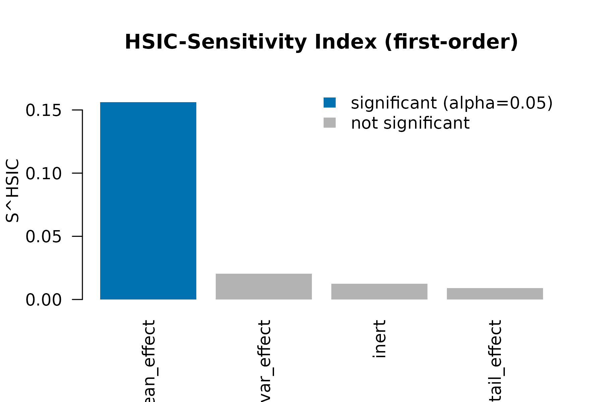

HSIC-Based Distributional Sensitivity
Max Moldovan
2026-06-13
Source:vignettes/kernR-sensitivity.Rmd
kernR-sensitivity.RmdWhat HSIC-Sensitivity catches that Sobol misses
Variance-based Sobol indices are the workhorse of global sensitivity analysis: they decompose the output variance into contributions from each input. They have one structural blind spot – distributional effects that leave variance unchanged. A parameter that flips the output skewness, fattens its tails, or shifts a quantile without moving the variance is invisible to Sobol.
The HSIC-Sensitivity Index (Da Veiga, 2015) replaces the variance with a kernel-based dependence measure (the Hilbert-Schmidt Independence Criterion). The normalised first-order index is
It is bounded like a Sobol index, comparable in magnitude across parameters, and detects mean-preserving distributional effects.
A sensitivity scan on a stubbed APSIM-like simulator
library(kernR)
stub_apsim <- function(theta) {
# theta: n x 4 matrix
# `mean_effect` shifts the mean (Sobol catches this)
# `var_effect` shifts the variance only -- mean-preserving
# `tail_effect` injects a heavy-tailed component (visible to HSIC)
# `inert` has no effect
n <- nrow(theta)
yield <- 1.5 * theta[, "mean_effect"] +
stats::rnorm(n, sd = exp(theta[, "var_effect"])) +
theta[, "tail_effect"] *
stats::rt(n, df = 3) * 0.4 +
stats::rnorm(n, sd = 0.05)
matrix(yield, ncol = 1L, dimnames = list(NULL, "yield"))
}
bounds <- rbind(
mean_effect = c(0.0, 1.0),
var_effect = c(-0.5, 0.5),
tail_effect = c(0.0, 1.0),
inert = c(0.0, 1.0)
)
design <- lhs_design(n = 200L, bounds = bounds, seed = 11L)
y <- stub_apsim(design)The scan
fit <- hsic_sensitivity(
theta = design,
y = y,
n_permutations = 199L,
seed = 11L
)
fit
#>
#> HSIC-Sensitivity Indices
#>
#> Parameters: 4
#> Outputs: 1
#> N: 200
#> Permutations: 199
#> P-adjust: BH
#> Total-order: no
#>
#> Per-parameter ranking (descending S, max across outputs):
#> S = first-order index
#>
#> parameter S_first_max min_p_first
#> mean_effect 0.156 0.0200
#> var_effect 0.020 0.1400
#> inert 0.013 0.4000
#> tail_effect 0.009 0.5250The print method ranks parameters by their first-order HSIC-Sensitivity Index. Expectations on this design:
-
mean_effect– large index, small p-value (Sobol would also catch this). -
var_effect– non-negligible index despite preserving the conditional mean (Sobol misses this). -
tail_effect– detectable distributional contribution. -
inert– index near zero, p-value not significant.
Visual
plot(fit)
Bars colour-coded by significance at the default
alpha = 0.05 after Benjamini-Hochberg adjustment.
Side-by-side with sensitivity::sobol
If you have the sensitivity package installed, you can
compare HSIC indices to Sobol’s first-order indices on the same
design:
library(sensitivity)
sobol_fit <- sensitivity::sobolEff(
model = function(X) stub_apsim(as.matrix(X))[, 1L],
X1 = as.data.frame(design[1:100, ]),
X2 = as.data.frame(design[101:200, ]),
nboot = 200
)
# Compare sobol_fit$S to fit$indexThe headline observation: Sobol will rank mean_effect
first and likely flag tail_effect and
var_effect as small/negligible. HSIC captures the latter
two as genuine signal – the verdict you want when the decision-relevant
question is whether the parameter changes the distribution, not
just the variance.
Tabular form
df <- as.data.frame(fit)
df[order(-df$index), ]
#> parameter output index statistic p_value p_value_adjusted
#> 1 mean_effect yield 0.156179387 0.0135556487 0.005 0.020
#> 2 var_effect yield 0.020423111 0.0017713847 0.070 0.140
#> 4 inert yield 0.012529016 0.0010870367 0.300 0.400
#> 3 tail_effect yield 0.008953081 0.0007768353 0.525 0.525Total-order indices
The first-order index S_j measures the
direct contribution of X_j to Y. It misses
contributions of X_j through interactions with
other parameters. The total-order index, in Da Veiga’s
complement formulation,
captures the total – direct plus all-order interactions –
contribution of X_j. By construction:
- Purely additive model
Y = sum_j f_j(X_j):T_j = S_j. - Pure interaction
Y = X_1 X_2:S_jmay be near zero (marginal signal averages out) butT_jis strong.
The difference T_j - S_j quantifies the interactive
component.
A pure-interaction example
set.seed(42L)
n <- 400L
theta_int <- matrix(stats::runif(n * 2L, min = -1, max = 1), n, 2L,
dimnames = list(NULL, c("x1", "x2")))
y_int <- theta_int[, "x1"] * theta_int[, "x2"] +
stats::rnorm(n, sd = 0.05)
fit_int <- hsic_sensitivity(
theta = theta_int,
y = y_int,
total_order = TRUE,
p_value = FALSE, # total-order p-values not computed (see Notes)
n_permutations = 199L,
seed = 42L
)
fit_int
#>
#> HSIC-Sensitivity Indices
#>
#> Parameters: 2
#> Outputs: 1
#> N: 400
#> Permutations: skipped (p_value = FALSE)
#> Total-order: yes
#>
#> Per-parameter ranking (descending S, max across outputs):
#> S = first-order index T = total-order index interaction = T - S
#>
#> parameter S_first_max T_total_max interaction min_p_first
#> x1 0.100 0.906 0.806 --
#> x2 0.094 0.900 0.806 --Both x1 and x2 should have small
first-order indices (the marginal expectation of X1 X2 is
zero) but large total-order indices. The
interaction = T - S column makes the gap explicit.
A near-additive example for contrast
theta_add <- matrix(stats::runif(n * 2L), n, 2L,
dimnames = list(NULL, c("x1", "x2")))
y_add <- 2 * theta_add[, "x1"] + theta_add[, "x2"] +
stats::rnorm(n, sd = 0.05)
fit_add <- hsic_sensitivity(theta_add, y_add, total_order = TRUE,
p_value = FALSE, seed = 1L)
fit_add
#>
#> HSIC-Sensitivity Indices
#>
#> Parameters: 2
#> Outputs: 1
#> N: 400
#> Permutations: skipped (p_value = FALSE)
#> Total-order: yes
#>
#> Per-parameter ranking (descending S, max across outputs):
#> S = first-order index T = total-order index interaction = T - S
#>
#> parameter S_first_max T_total_max interaction min_p_first
#> x1 0.721 0.884 0.163 --
#> x2 0.116 0.279 0.163 --On this additive model T_j - S_j should be close to zero
for both parameters.
Pair-bootstrap CI for total-order indices
total_order_ci = TRUE (since 0.0.0.9013) activates a
pair-bootstrap percentile CI on each total-order index
T_j:
fit_pf <- hsic_sensitivity(
theta_add, y_add,
total_order = TRUE,
total_order_ci = TRUE,
n_permutations = 199L,
n_bootstrap = 100L,
ci_level = 0.95,
seed = 7L
)
fit_pf
#>
#> HSIC-Sensitivity Indices
#>
#> Parameters: 2
#> Outputs: 1
#> N: 400
#> Permutations: 199
#> P-adjust: BH
#> Total-order: yes
#>
#> Per-parameter ranking (descending S, max across outputs):
#> S = first-order index T = total-order index interaction = T - S
#> T_CI = pair-bootstrap 95% percentile CI on T (B = 100 resamples). NOT a significance test for T = 0; see ?hsic_sensitivity Details.
#>
#> parameter S_first_max T_total_max interaction min_p_first T_CI
#> x1 0.721 0.884 0.163 0.0050 [0.836, 0.920]
#> x2 0.116 0.279 0.163 0.0050 [0.242, 0.322]
as.data.frame(fit_pf)[, c("parameter", "output",
"index_total_order",
"ci_total_order_lower",
"ci_total_order_upper")]
#> parameter output index_total_order ci_total_order_lower ci_total_order_upper
#> 1 x1 y1 0.8838120 0.8362184 0.9201480
#> 2 x2 y1 0.2788908 0.2422700 0.3218026The CI is uncertainty quantification on the index magnitude,
not a hypothesis test. An earlier (0.0.0.9012)
total_order_p_value field claimed to test
H_0: T_j = 0 — that was found in critical review on
2026-05-16 to be mis-calibrated under pure-noise Y (all
parameters were assigned p ≈ 1/(1 + B) because the
bootstrap samples the empirical joint, not a null-of-no-effect) and was
removed in 0.0.0.9013. A properly null-calibrated total-order
significance test remains future work. Cost scales as
n_bootstrap × p × q kernel re-evaluations on resampled
designs; default n_bootstrap = 200 is a workable starting
point for p, q ≤ 10, n ≤ 1000.
Notes on total-order indices
-
Cost. Total-order construction is
O(p n^2)for kernel matrices on eachX_{~j}plusO(p q n^2)for HSIC, similar in scale to first-order. For ag-scale designs (nin the hundreds-low thousands) both are practical. Pick-Freeze bootstrap multiplies this byn_bootstrap(default 200) — budget accordingly. -
Nystrom acceleration for total-order is
intentionally not exposed in this version. The naive way to fold
nystrom_factor()intoT_jcomputation (materialisingF F^Tinto a fulln x nkernel) is slower than the exact path at typical kernR scales, because materialisation costsO(n^2 m). A proper factor-only HSIC primitive (Nystrom-on-Nystrom) is the unblocking next step and is on the future-work list.
Notes on practice
-
Design size. As with B1 identifiability,
n >= 10pis a reasonable starting point. -
Permutations. When the goal is ranking only, set
p_value = FALSEto skip the permutation null entirely – the per-column kernel cache is reused, so the index calculation is cheap. Usep_value = TRUE(default) when you also want a significance verdict on first-order indices.
Notes on practice
-
Design size. As with B1 identifiability,
n >= 10pis a reasonable starting point. -
Permutations. When the goal is ranking only, set
p_value = FALSEto skip the permutation null entirely – the per-column kernel cache is reused, so the index calculation is cheap. Usep_value = TRUE(default) when you also want a significance verdict. -
Comparing to Sobol. HSIC-SI is not numerically
equal to a Sobol first-order index even on linear additive systems. They
are bounded comparable (both in
[0, 1]) and typically agree on ranking when only mean effects are present. Disagreement is the point: when HSIC ranks a Sobol-flat parameter highly, that parameter is shifting the output distribution in a non-variance way.